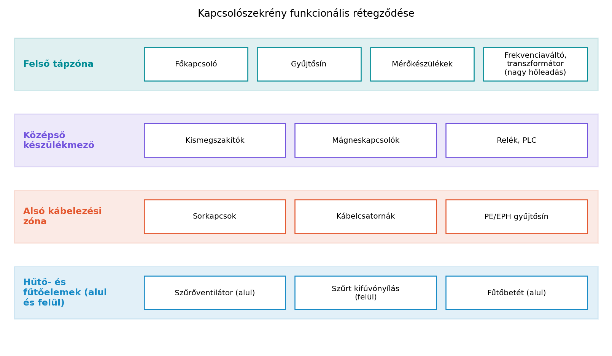

Egy ipari kapcsolószekrény nem egyszerűen egy fémdoboz, amelybe készülékeket csavarozunk. Ha a belső elrendezés rossz, a szekrény túlmelegedhet, a készülékek idő előtt meghibásodhatnak, a vezetékezés áttekinthetetlenné válik, és az üzemzavar-elhárítás is indokolatlanul sok időt emészt fel. A Kapcsolószekrények és elosztóberendezések rész előző alfejezetében, Az elosztóberendezések szabványai és típusai alfejezetben megismerkedtünk a szekrénytípusokkal és az alapvető szabványi követelményekkel. Most belülről vizsgáljuk meg a szerkezetet: mire szerelünk, hogyan rögzítünk, és mit teszünk azért, hogy a hő ne tegye tönkre a berendezést.
A jó elrendezéssel három célt érsz el egyszerre: a készülékek hozzáférhetők maradnak, a hőelvezetés működik, és a szerelési idő is csökken. A rossz elrendezés viszont leoldásokat, melegedő csatlakozásokat és rejtélyes, csak meleg időben jelentkező hibákat okoz.
A legtöbb kapcsolószekrény belső terét nem véletlenszerűen töltjük meg. A feladat szerint négy nagy zónát célszerű kialakítani: a felső tápzónát, a középső készülék- és szerelőmezőt, az alsó kábelezési zónát, valamint a hűtő- vagy fűtőelemek helyét.

A rétegződés lényege, hogy a nagy hőleadású elemek (transzformátorok, frekvenciaváltók, ellenállások) ne közvetlenül a hőérzékeny elektronika alatt helyezkedjenek el, hanem a meleg levegő természetes útvonala, azaz a felső zóna felé kerüljenek. A kábelek és sorkapcsok alulra kerülnek, ahová a hidegebb levegő érkezik, és ahol a szerelés is kényelmesebb. A hűtő- vagy fűtőelemeket a légáramlás szempontjából kedvező helyre, gyakran a szekrény alsó és felső részére szerelik.
Az alábbi ábrán egy nyitott ajtajú szekrény részei láthatók számozva. Az 1 váz hordozza a 2 szerelőlemezt; a felső tápzónában a 3 főkapcsoló és a 4 gyűjtősínek vannak, ez utóbbiakat az 5 szigetelő tartók rögzítik. A középső mezőben a 6 DIN-sínekre pattintott 7 moduláris készülékek és a PLC ülnek, köztük a 8 kábelcsatornák vezetik a huzalokat. Alul a 9 sorkapocs-sor, a 10 PE-sín és a tőle elkülönített 11 N-sín, valamint a 12 fűtőbetét termosztáttal kap helyet, a kábelek a 13 fenéklemez tömszelencéin érkeznek. A 17 ajtón alul a 14 szűrőventilátor szívja be a hideg levegőt, felül a 15 kifúvórácson távozik a meleg; a 16 földelőszalag az ajtót a vázhoz köti.
Figyeld meg, hogy a nagy hőleadású készülékek felül, a hőérzékeny PLC lejjebb, a fűtőbetét pedig a PLC-től és a kábelektől távolabb van, és hogy a kábelcsatornák nem takarják a szellőzőnyílásokat. A HTML-kiadásban egy részre mutatva megjelenik a szerepe, a levegő útja, a fűtés és a kábelcsatornák rétegként ki-be kapcsolhatók.
Definíció. Szerelőlemez. A szerelőlemez a kapcsolószekrényben függőlegesen vagy vízszintesen rögzített, rendszerint horganyzott acéllemez, amelyre a készülékek, sorkapcsok, kábelcsatornák többségét csavarozzák. Célja, hogy a készülékeket a szekrény vázától függetlenül, stabilan és síkban lehessen elhelyezni. Vastagsága jellemzően 2–3 mm (a gyártói adatlapon ellenőrizendő), hogy a nagyobb készülékek súlyát is elbírja. A szerelőlemez csavaros rögzítése lehetővé teszi, hogy a szekrény külső burkolata nélkül is szereljük, majd a lemezt az egész szerkezettel együtt emeljük be.
Definíció. DIN-sín. A DIN-sín a kapcsolószekrényekben a legelterjedtebb, 35 mm széles szabványos rögzítőprofil (gyakori neve: TS35). A kismegszakítókat (MCB), áram-védőkapcsolókat (RCD), sorkapcsokat, reléket és számos vezérlőkészüléket úgy tervezik, hogy egyszerűen rá lehessen pattintani, illetve csavarhúzóval lefeszíteni. Anyaga általában horganyzott acél, néha alumínium. A DIN-sínnek nem feladata a villamos áram vezetése; a készülékek csatlakozókapcsait külön vezetékek kötik össze.
Definíció. Gyűjtősín. A gyűjtősín olyan csupasz vagy szigetelt vezető sín, amely több áramkört közösít. A kapcsolószekrényben leggyakrabban réz vagy alumínium laposrúd, ritkábban profilozott rézsín. A gyűjtősín méretezésekor nemcsak az üzemi áramot, hanem a zárlati áram által okozott melegedést és az elektrodinamikai erőhatásokat is figyelembe kell venni. A síneket szigetelő tartókra szerelik, és úgy kell rögzíteni, hogy a zárlat fellépésekor ne tudjanak elcsúszni vagy összeérni.
Szabály. A gyűjtősín terhelhetősége és rögzítése. A gyűjtősín megengedett terhelhetőségét a gyártói adatlapok és a vonatkozó szabványok rögzítik. A melegedés függ a sín anyagától, keresztmetszetétől, felületétől, a környezeti hőmérséklettől és a sín hűtésétől. A szekrényben a síneket úgy kell elhelyezni, hogy a meleg levegő szabadon áramolhasson mellettük, és a csatlakozási pontok (csavaros kötések) hozzáférhetők maradjanak. A csavarkötéseket a gyártó által megadott csavarnyomatékkal kell meghúzni; a nem megfelelő nyomaték melegedő, később ívkárosodást okozó kötést hozhat létre.
Szabály. Az ajtó és a burkolati elemek földelése. A fém ajtó, oldalfal és tető vezetőképes rész, ezért a védővezetői rendszerhez kell kötni. A zsanér önmagában nem megbízható védővezetői kötés (festett, kopó felület), ezért az ajtót hajlékony földelőszalaggal vagy zöld-sárga vezetővel kötjük a vázhoz; ha az ajtóra készüléket (műszert, jelzőlámpát, nyomógombot, ventilátort) szerelünk, ez különösen fontos. A szalag keresztmetszetét és a kötés módját a szekrénygyártó adja meg (ellenőrizendő: MSZ EN 61439-1, gyártói rendszerleírás).
Az alábbi ábra (a) része a gyűjtősíneket mutatja: az 1 szigetelő tartók tartják a 2 L1–L3 síneket, a 3 leágazó sín csavarral csatlakozik az L1-re. A (b) metszeten a kötés rétegei láthatók: a 4 csavar, az 5 alátétek, a két sín, a 6 rugós alátét, amely hőtágulás mellett is tartja az előfeszítést, és a 7 anya. A (c) rész az ajtó földelése: a 8 földelőcsapok a vázon és az ajtón vannak, köztük a 9 földelőszalag fut, a 10 fogazott alátét a festékrétegen át is fémes érintkezést ad.
A csavarkötést nyomatékkulccsal húzd meg, majd jelölőcsíkkal jelöld meg, így a későbbi ellenőrzésnél látszik, ha elfordult. Tipikus hiba, hogy az ajtó földelőszalagját a festett felületre, fogazott alátét nélkül csavarozzák: a kötés ilyenkor nagy ellenállású, amit a védővezető-folytonosság mérése kimutat. A HTML-kiadásban az egyes részekre mutatva a szerepük olvasható.
A kapcsolószekrényben szinte minden készülék hőt termel. A hőveszteséget a gyártói adatlapok általában wattban adják meg. Néhány jellemző érték (becslés, katalógusadattól függően):
Szabály. Hőleadó és hőérzékeny elemek elrendezése. A nagy veszteségű készülékeket a szekrény felső részébe vagy olyan zónába kell tenni, ahonnan a meleg levegő szabadon távozhat. A hőérzékeny elektronikát (PLC, biztonsági relé, kommunikációs modul) alacsonyabbra, lehetőleg a hideg levegő belépési oldalára kell szerelni. Két készülék között hagyni kell a gyártó által előírt szerelési távolságot: ez biztosítja a szellőzést és a kábelezéshez szükséges helyet. A gyártói adatlapok gyakran megadják a minimális szabad térközt, jellemzően 30–100 mm-t, de ezt mindig ellenőrizni kell.
Számítás. A belső hőveszteség meghatározása. A szekrényben keletkező összes hőveszteséget a készülékek veszteségi teljesítményeinek összege adja:
ahol a szekrényben disszipált teljes hőteljesítmény wattban, pedig az egyes készülékek veszteségi teljesítménye. Az összegzéshez a készülékek katalógusadatait vagy a gyártói hőleadási adatokat használjuk.
Példa. Hőveszteség összegzése. Egy motorvezérlő szekrényben a következő készülékek vannak:
Határozzuk meg a szekrény összes hőveszteségét.
Megoldás. A veszteségeket összegezzük:
A szekrény tehát körülbelül 116 W hőt termel. Ez elsőre nem tűnik soknak, de egy zárt, rosszul szellőző szekrényben 10–20 K hőmérséklet-emelkedést is okozhat.
A szekrény hőmérsékletét a belső hőveszteség és a szekrény hőleadó képessége határozza meg. Ha a szekrény fala elegendő hőt lead a környező levegőnek, a belső hőmérséklet megállapodik. A leadott hő maga is a hőmérséklet-különbségtől függ, ezért a belső hőmérséklet addig nő, amíg a leadás egyenlő a veszteséggel; a döntő kérdés, hogy ez az egyensúlyi hőmérséklet a megengedett érték alatt marad-e.
Összefüggés. Passzív hőleadás. A szekrény által passzívan leadott hőteljesítményt közelítőleg így számíthatjuk:
ahol a leadott hőteljesítmény wattban, a szekrény hőátadási tényezője W/(m²·K)-ben (jellemzően 3–6 W/(m²·K), a gyártói adattól függően; ellenőrizendő), a szekrény effektív hűtőfelülete m²-ben, a belső és a külső levegő hőmérséklet-különbsége kelvinben. Az egyensúlyi hőmérséklet-különbség , a belső hőmérséklet ekkor .
Döntési lépések. (1) Megengedett belső hőmérséklet (pl. 35–40 °C – ellenőrizendő: készülékadatlap). (2) Legnagyobb környezeti hőmérséklet . (3) Passzív leadás a megengedett különbségnél: . (4) Ha , kényszerhűtés (vagy más beavatkozás) kell. A továbbiakban mindig a megengedett -re értendő.
Ábraolvasás. A vízszintes vonal a szekrény W vesztesége, a ferde egyenesek a leadott hő a belső hőmérséklet függvényében ( W/(m²·K), m², tehát W/K, °C – példaadatok; a megengedett 40 °C-on így a passzív leadás W, ugyanannyi, mint a lenti légáram-számításban). A metszéspont az egyensúlyi belső hőmérséklet: . Passzívan °C, ami a példaként vett 40 °C-os határ fölött van; a lenti számításból adódó 16,7 m³/h-s szellőztetéssel ( W/K) a leadás meredekebb, és °C – éppen a határon, hiszen a légáramot pontosan erre méreteztük; a gyakorlatban ezért tartalékkal (nagyobb légszállítású ventilátorral) választunk. A hőmérséklet tehát nem „folyamatosan emelkedik”, hanem egy egyensúlyi értéken áll be – a kérdés az, hogy ez a megengedett határ alatt van-e. A HTML-kiadásban csúszkával állíthatod a veszteséget, a felületet, a tényezőt, a környezeti hőmérsékletet, a ventilátor légáramát és a megengedett belső hőmérsékletet; a kalkulátor kiírja az egyensúlyi -t, és jelzi, ha a határ fölé kerül.
Összefüggések. Kényszerhűtés méretezése. Ha a passzív hőleadás nem elegendő, kényszerhűtést kell alkalmazni. A szellőztetéshez szükséges légáramot a következő képletből becsülhetjük:
ahol a levegő térfogatárama m³/s-ban, a levegő sűrűsége (kb. ), a levegő fajhője (kb. ), pedig a levegő megengedett felmelegedése a szekrényben (pl. 10 K). A hűtőaggregát vagy hőcserélő szükséges hűtőteljesítménye legalább a szekrényben disszipált hőteljesítmény legyen, plusz ha a külső hőmérséklet magasabb a kívánt belső hőmérsékletnél, a falon át beáramló hő.
Számítás. Szellőztetési légáram meghatározása. Tegyük fel, hogy a fenti 116 W veszteségű szekrényben a passzív leadás a megengedett belső hőmérsékleten 60 W (az ábra példaadataival: W/K, K), és a levegőt legfeljebb 10 K-nel engedjük felmelegedni a szekrényben. A szükséges légáram:
Ez körülbelül 16,7 m³/h. A gyakorlatban egy kis szűrőventilátor 50–200 m³/h légszállítással bőven elegendő lehet, de a pontos kiválasztásnál figyelembe kell venni a szűrő ellenállását és a szekrény tömítettségét is.
Nemcsak a túlmelegedés, hanem a túlzott lehűlés is káros lehet. Ha a kapcsolószekrény kültéren vagy fűtetlen helyiségben áll, és a belső levegő hőmérséklete a harmatpont alá süllyed, a levegő nedvessége kicsapódik a hideg felületeken. A páralecsapódás a szigetelési ellenállást csökkenti, korróziót okoz, és kúszóáramot vagy átívelést is előidézhet.
Szabály. Fűtőbetét alkalmazása. A hőmérséklet harmatpont felett tartásához fűtőbetétet (ellenállásfűtést) szerelnek a szekrénybe, amelyet termosztáttal vagy higrosztáttal vezérelnek. A fűtőteljesítményt úgy kell megválasztani, hogy a szekrény belső hőmérséklete a környezeti hőmérséklet ingadozása mellett is 5–10 K-nel a harmatpont felett maradjon. A szükséges fűtőteljesítmény közelítőleg , ahol a kívánt legkisebb belső hőmérséklet (harmatpont + 5–10 K), a legkisebb környezeti hőmérséklet, a szekrény hőátbocsátási tényezője, a szekrény effektív hőleadó felülete; ha a berendezés állhat (nincs belső veszteség), . Fűtés csak akkor kell, ha a belső hőveszteség ezt nem fedezi. A pontos értéket a szekrénygyártó hőszámítási táblázata vagy a fűtőberendezés gyártója adja meg.
A fűtőbetétet ne a műanyag kábelek vagy érzékeny készülékek közvetlen közelébe szereld, mert a hősugárzás károsíthatja azokat. A fűtőbetét és a kábelek között tartsd be a gyártói biztonsági távolságot.
Szabvány. Kapcsolóberendezések és elrendezésük. A kisfeszültségű kapcsoló- és vezérlőberendezések szerelésére, szerkezeti kialakítására és a beépített készülékek elrendezésére az MSZ EN 61439 sorozat vonatkozik. A szabvány előírja, hogy a berendezésben a gyártó által megadott üzemi feltételek mellett a hőmérséklet-emelkedés nem lépheti túl a készülékekre és a szigetelő anyagokra megengedett határértékeket. A berendezés védettségére és a környezeti hatásokkal szembeni ellenállásra az MSZ EN 60529 (IP-kód) és a gyártói adatok az irányadók. A pontos határértékeket, vizsgálati eljárásokat és táblázatokat a mindenkor hatályos szabványkiadás és a készülékgyártó adatlapja tartalmazza – ezeket tervezés előtt ellenőrizni kell.
A szekrény hűtésére és fűtésére vonatkozó részletes környezetállósági követelményekkel a Védettség (IP, IK), különleges környezet és klimatizálás alfejezet foglalkozik.
Továbbvitt eredmény. A hőmérséklet-számítás itt bemutatott elve – a belső hőveszteség, a passzív leadás és a szükséges légáram viszonya – alapozza meg a Védettség (IP, IK), különleges környezet és klimatizálás alfejezet hűtési és fűtési méretezési lépéseit.
Egy műanyagipari üzemben egy frekvenciaváltós motorszekrény rendszeresen leállt a nyári hónapokban. A szerelő megnézte a szekrényt: a frekvenciaváltó a szekrény alsó részébe, közvetlenül a PLC alá volt szerelve. A természetes légáramlás a meleg levegőt felfelé vezette, így a PLC mindig a frekvenciaváltó meleg levegőjében dolgozott. A hőmérséklet a PLC környezetében meghaladta a gyártó által megengedett 50 °C-ot, és a PLC túlmelegedési (hőmérséklet-) hibaüzenetet adott.
A javítás során a frekvenciaváltót a szekrény felső zónájába helyezték át, a PLC-t pedig alacsonyabbra, hidegebb környezetbe szerelték. Ezen kívül a szekrény aljára szűrőventilátort, tetejére szűrt kifúvónyílást szereltek. A hőmérséklet a PLC-nél 55 °C-ról 38 °C-ra csökkent. A hiba megszűnt, és a PLC élettartama is megnőtt. Az eset tanulsága: nem elég a készülékeket beférni, a hő útját is meg kell tervezni.
Az alábbi ábra a javítás előtti és utáni állapotot oldalmetszetben állítja szembe. A helyes elrendezésben a hideg levegő alul, a szűrőventilátoron lép be, végigsöpör a készülékeken, és felül, a kifúvórácson távozik; a frekvenciaváltó felül, a PLC alatta, a fűtőbetét alul, a termosztáttal együtt, a kábelektől távol van. A hibás elrendezésben a frekvenciaváltó meleg levegője egyenesen a PLC-re száll, az alsó nyílást kábelcsatorna takarja, a fűtőbetét pedig a felfelé futó kábelköteget melegíti.
Ellenőrzéskor kövesd végig ujjal a levegő útját a beszívástól a kifúvásig: ha útközben kábelcsatorna, szerelőlemez vagy nagy készülék zárja el, a hűtés papíron megfelel, a valóságban nem. A HTML-kiadásban a két változat között gombbal válthatsz.
Cél. Kapcsolószekrény belső elrendezésének megtervezése és a hűtés/fűtés szükségességének meghatározása.
Eszközök és anyagok. Kapcsolószekrény, szerelőlemez, DIN-sínek, gyűjtősínek, készülékek, hőleadási adatlapok, csavarhúzók, csavarnyomatékkulcs, mérőműszerek (hőmérséklet-mérő, áramváltós lakatfogó), feliratozó anyagok.
Biztonsági korlát. A feladat tanműhelyi környezetre vagy jogosult oktató felügyeletére vonatkozik; hálózati feszültségen önállóan ne végezd. A bekötött szekrényen a munkát csak feszültségmentesítés után, az öt biztonsági szabály szerint kezdd el.
Az öt biztonsági szabály: 1. Lekapcsolás (a szekrény leválasztása minden energiaforrásról, a külső vezérlőfeszültségről és a szünetmentes tápról is). 2. Visszakapcsolás elleni biztosítás (lakatolás, kikapcsolt állapot rögzítése). 3. Feszültségmentesség megállapítása kétpólusú feszültségvizsgálóval (MSZ EN 61243-3, ellenőrizendő: aktuális kiadás; fázisceruzával nem) minden pólus között: L1–L2, L2–L3, L3–L1, minden fázis–N, minden fázis–PE és N–PE; a vizsgáló működését előtte és utána ismert feszültségforráson ellenőrizd. 4. Földelés és rövidre zárás (ha a munka jellege megköveteli). 5. Szomszédos, feszültség alatt álló részek lefedése.
Lépések:
Ellenőrzési pontok. A készülékek rögzítése stabil, a csavarnyomatékok megfelelők, a szellőzőnyílások szabadok, a hőleadó készülékek felül vannak, a belső hőmérséklet a megengedett határon belül marad, a fűtőbetét nem érinti a kábeleket, és a feliratok jól láthatók.
Tipikus hibák a gyakorlatban. A szerelő a nagy hőleadású elemet a kábelezési zónába rejti, a szellőzőnyílásokat letakarja kábelcsatornával, vagy nem hagy a készülékek között szellőzési rést. Mindegyik melegedést okoz.
Dokumentálás. A kész szekrényben készíts belső elrendezési rajzot, tüntesd fel a készülékek referenciajelölését, a hűtő- és fűtőelemek bekötését, és rögzítsd a hőmérsékleti ellenőrzés eredményét.
Hiba 1. A hőleadó készülék az érzékeny elektronika alá kerül. A meleg levegő felfelé száll, így a frekvenciaváltó alatt levő PLC folyamatosan meleg levegőt kap. A helyes elrendezés: a hőleadó felül, az elektronika alul.
Hiba 2. A szerelő figyelmen kívül hagyja a veszteségi teljesítményt. Csak a helyigényt nézi, a hőveszteséggel nem számol. Emiatt a szekrény túlmelegszik, a készülékek idő előtt meghibásodnak. A megoldás: mindig gyűjtsd össze a wattokból a teljes hőveszteséget, és ellenőrizd a hűtést.
Hiba 3. A fűtőbetét közvetlenül a kábelek mellé kerül. A hősugárzás megolvaszthatja a szigetelést. A fűtőbetétet a gyártói előírást betartva, a kábelektől távol kell elhelyezni.
Hiba 4. A szellőzőnyílásokat letakarja a kábelcsatorna vagy a szerelőlemez. A légáramlás lecsökken, a hűtés hatástalanná válik. A szellőzőnyílásokat mindig szabadon kell hagyni.
1. feladat (A). Sorold fel a kapcsolószekrény négy funkcionális zónáját, és mindegyikhez egy-egy jellemző készüléket!
2. feladat (A). Egy szekrényben 6 kismegszakító (egyenként 2 W), 3 mágneskapcsoló (egyenként 9 W), egy PLC (12 W) és egy tápegység (7 W) található. Mekkora a teljes hőveszteség?
3. feladat (B). Az előző feladat szekrényének effektív hűtőfelülete 2,2 m², hőátadási tényezője 5 W/(m²·K). A külső hőmérséklet 30 °C. Mennyi a szekrény passzív hőleadása, ha a belső hőmérséklet eléri a 45 °C-ot? Szükséges-e kényszerhűtés?
4. feladat (B). Határozd meg a szükséges szellőztetési légáramot, ha a teljes hőveszteség 150 W, a passzív leadás 70 W, a levegő felmelegedése legfeljebb 8 K lehet, a levegő sűrűsége 1,2 kg/m³, fajhője 1005 J/(kg·K). Add meg az eredményt m³/h-ban is!
5. feladat (C). Rajzold fel egy motorvezérlő szekrény belső elrendezési vázlatát: az alsó zónában sorkapcsok és kábelcsatorna, a középső zónában PLC, tápegység, relék, mágneskapcsolók, a felső zónában frekvenciaváltó, főkapcsoló, gyűjtősín. Indokold, miért a frekvenciaváltó kerül felülre! Hol helyeznéd el a szellőző ventilátort és a fűtőbetétet?
6. feladat (D). Egy műhelyben egy kapcsolószekrény belső hőmérséklete 48 °C-on stabilizálódott, amikor a külső hőmérséklet 28 °C volt. A készülékek gyártói adatlapja szerint a megengedett maximális környezeti hőmérséklet 50 °C. A szekrényben a mért összes hőveszteség 90 W. Nyáron a külső hőmérséklet 35 °C-ig emelkedhet, a szekrényben legfeljebb 45 °C-ot szeretnénk tartani. Döntsd el, szükséges-e beavatkozás! Ha igen, javasolj hűtési megoldást, és becsüld meg a szükséges légáramot 10 K levegő-felmelegedéssel (a passzív leadást a 45 °C-os célhőmérsékletre számold).
Önellenőrzés – válaszok
Feladatok megoldásai
1. feladat. Felső tápzóna (gyűjtősín), középső készülékmező (kismegszakító), alsó kábelezési zóna (sorkapocs), hűtő/fűtő zóna (ventilátor). A megoldás a szövegben bemutatott rétegződésre épül.
2. feladat.
3. feladat. Adott: , , . A passzív leadás:
A teljes veszteség 58 W, ami kisebb 165 W-nál (a 45 °C-os belső hőmérsékletre vonatkozó leadásnál), tehát a passzív hűtés elegendő, kényszerhűtésre nincs szükség. A belső hőmérséklet a valóságban ennél alacsonyabban fog stabilizálódni.
4. feladat. A szekrényből elvonandó hő: . A légáram:
Átváltva: . Tehát körülbelül 30 m³/h légáram kell.
5. feladat. A vázlat a funkcionális rétegződés alapján készül. A frekvenciaváltó kerül felülre, mert nagy hőleadású, és a meleg levegő felfelé szállva távozik a szekrényből, így nem melegíti az alsóbb zónában levő érzékeny elektronikát. A szellőző ventilátort alulra, a szűrt kifúvónyílást felülre, a fűtőbetétet az alsó zónába, de a kábelektől távol, lehetőleg a hideg levegő beömléséhez közel helyeznénk el. A vezérlő elemek (PLC, relék, tápegység) a középső zónában, a frekvenciaváltó alatti meleg légáramon kívül kapnak helyet.
6. feladat. Állandósult állapotban a szekrény falán át pontosan a 90 W veszteség távozik, így . 35 °C külső hőmérsékletnél a belső hőmérséklet lenne, ami meghaladja a megengedett 50 °C-ot, a célhőmérséklet (45 °C) pedig még inkább kívül esik: beavatkozás szükséges. A 45 °C-os célnál a passzív leadás , a maradék 45 W-ot szellőztetéssel vezetjük el:
Átváltva: . Egy 50 m³/h-s szűrőventilátor elegendő lehet, de a szűrő ellenállása és a szekrény tömítettsége miatt a gyártói méretezés szerint kell ellenőrizni.
A kapcsolószekrény belső felépítését a funkció, a hőelvezetés és a szerelhetőség határozza meg. A szerelőlemez a készülékek stabil alapja, a DIN-sín (TS35) a gyors rögzítést szolgálja, a gyűjtősín pedig a nagy áramok közösítésére való. A gyűjtősínek terhelhetőségét a gyártói adatok adják meg, rögzítésüket a zárlati erőhatásokra is méretezni kell. A készülékeket zónákba rendezzük: felül a nagy hőleadású elemek, középen az érzékeny elektronika, alul a kábelezés. A hűtés szükségességét a hőveszteségek összegzésével és a szekrény passzív hőleadásával állapítjuk meg: ha a veszteség nagyobb, mint a megengedett belső hőmérsékleten számított passzív leadás (), kényszerhűtés kell. A szellőztetés méretezésére a közelítő képletet használjuk. Hűvös, párás környezetben a páralecsapódás ellen fűtőbetéttel tartjuk a belső hőmérsékletet a harmatpont felett. Ezek a hőtani alapelvek a Védettség (IP, IK), különleges környezet és klimatizálás alfejezet hűtési-fűtési méretezését alapozzák meg.
A szekrények, sínek, szerelőlemezek mechanikai adatait, a hőátadási tényezőket és a veszteségi teljesítményeket a gyártói katalógusok (szekrénygyártók katalógusai) és a beépített készülékek adatlapjai tartalmazzák. A vonatkozó szabványok az MSZ EN 61439 sorozat és az MSZ EN 60529. A szövegben használt konkrét értékek (hőátadási tényező, szerelési távolság, veszteségi teljesítmény) tanulási példák, nem tervezési előírások. A tervezéshez a hatályos szabványkiadást és a gyártói adatlapokat ellenőrizni kell.